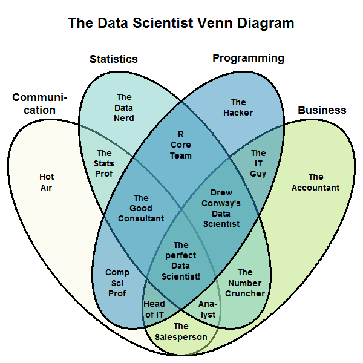

Big data, spatial data science, and VGI
Matthew Haffner
matt.haffner@okstate.edu
@geo_haffner
https://mhaffner.github.io
Big data
- "Anything that cannot fit into an Excel spreadsheet."
- "Volume, velocity, and variety"
- ?



Big data, spatial data science, and VGI
- Volunteered Geographic Information (VGI) – the act of contributing
information about one's location.
- Voluntary (opt-in)
- Involuntary (opt-out)
VGI types
- Citizen Science (eBird)


VGI types
- Citizen science (eBird)
- Mapping projects (OSM)


VGI types
- Citizen science (eBird)
- Mapping projects (OSM)
- Location-based social media (Twitter)
What is the significance of this research?
- LBSM can be used
- In disaster situations
- To study social movements
- As a replacement for other data sources
- But is it valid for studying spatial process?
Case studies
- Project 1: Non-English Twitter activity in Houston, Texas
- Project 2: Android vs. iOS activity in Atlanta, NYC, and Detroit
Workflow
- Operating system: Manjaro (Arch Linux derivative)
- Editors: Emacs/Vim
- Scraping: Python
- Version control: Git (GitLab and GitHub)
- Database: ElasticSearch
- Data management tools: Bash, Sed, Python
- Spatial calculations: R and ElasticSearch
- Spatial visualization and mapping: R and QGIS


Big data, spatial data science, and VGI
Matthew Haffner
matt.haffner@okstate.edu
@geo_haffner
https://mhaffner.github.io